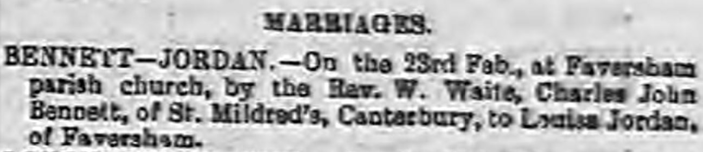
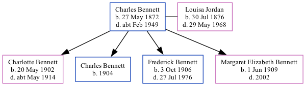

Charles John Bennett 1872 - c1949
[ Home ] | [ Calendar ] | [ Surnames Index ] | [ Family History ], Charles Bennett, the husband of Louisa Jordan (the second cousin twice-removed on the mother's side of Nigel Horne), was born in Rufford, Nottinghamshire, England on May 27, 18721,2 and married Louisa (with whom he had 4 children: Charlotte Priscilla, Charles James, Frederick Arthur and Margaret D Elizabeth) at St Mary Of Charity, Faversham, Kent, England on Feb 23, 19014.
Throughout his life, he lived at Claremont Place, Canterbury, Kent on Mar 31, 19011 and on Apr 2, 19112.
He died c. Feb 1949 in Sittingbourne, Kent3.
Children
- Charlotte Priscilla was born on May 20, 1902
- Charles James was born in 1904
- Frederick Arthur was born on Oct 3, 1906
- Margaret D Elizabeth was born on Jun 1, 1909
Citations
- 1901 England, Wales & Scotland Census - Findmypast (was age 28 and the head of the household)
- 1911 Census for England & Wales - Findmypast (was age 38 and the head of the household)
- England & Wales deaths 1837-2007 - Findmypast
- England & Wales Marriages 1837-2005 - Findmypast
Media
Whitstable Times and Herne Bay Herald - 9 Mar 1901

1911 Census for England & Wales - GBC/1911/RG14/04322/0293/1
1901 England, Wales & Scotland Census - GBC/1901/0005479878
England & Wales deaths 1837-2007 - BMD/D/1949/1/AZ/000087/119
England & Wales marriages 1837-2005 - BMD/M/1901/1/AZ/000021/240
Kent marriages and banns - GBPRS/CANT/M/94027382/1
Kent marriages and banns - GBPRS/CANT/M/94084803/1
Family Tree
Generated by Ged2Site. Last updated on Jul 20, 2025